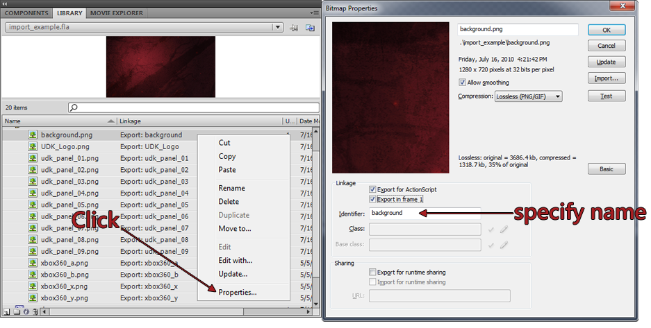
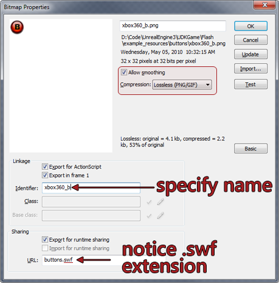
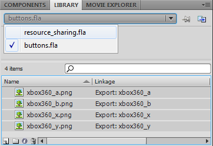
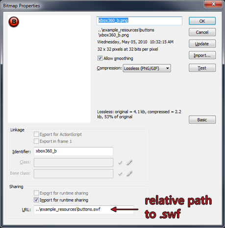

UDN
Search public documentation:
ScaleformImportCH
English Translation
日本語訳
한국어
Interested in the Unreal Engine?
Visit the Unreal Technology site.
Looking for jobs and company info?
Check out the Epic games site.
Questions about support via UDN?
Contact the UDN Staff
日本語訳
한국어
Interested in the Unreal Engine?
Visit the Unreal Technology site.
Looking for jobs and company info?
Check out the Epic games site.
Questions about support via UDN?
Contact the UDN Staff
Scaleform GFx 导入通道
概述
将 .SWF 导入到虚幻引擎 3 中
为了将 .SWF 文件导入到虚幻引擎 3 中，必须将它们放置在
GameDir\Flash 文件夹内部的一个目录中。例如，在 UDKGame 中放置 .SWF 文件的有效位置应该是 C:\UDK\UDK-2010-07\UDKGame\Flash\example\SomeFile.SWF 。虚幻引擎 3 将使用该文件的位置来确定导入过程中的包、群组以及资源的名称。例如，会将 C:\UDK\UDK-2010-07\UDKGame\Flash\example\SomeFile.swf 作为 SwfMovie'example.SomeFile' 导入。
更多示例：
| 源文件 | 导入为 |
|---|---|
C:\UDK\UDK-2010-07\UDKGame\Flash\MyPackage\MyGroup\A.swf | SwfMovie'MyPackage.MyGroup.A' |
C:\UDK\UDK-2010-07\UDKGame\Flash\Pkg\Group_0\Group_1\B.swf | SwfMovie'Pkg.Group_0.Group_1.B' |
导入选项
导入对话框会提供一些您可以设置的选项，它们会影响到 .SWF 文件及其关联资源导入到虚幻引擎 3 中的方式。- 在导入的贴图上设置 sRGB
- 如果启用该选项，会将导入的贴图标记为 sRGB。
- 压缩贴图
- 启用该选项后，虚幻引擎 3 会将小的贴图压缩到大的贴图图集中，然后使用 UV 偏移量引用单独的贴图。
- 压缩贴图大小
- 在启用压缩贴图选项后，它代表压缩贴图的最大尺寸。
- 贴图重新缩放
- 该选项允许您在导入的时候马上选择贴图的缩放方式。
方法 描述 FlashTextureScale_High 会在导入过程中将当前不是 2 的幂数的贴图按比例增加到下一个最高的 2 的幂数 FlashTextureScale_Low 会在导入过程中将当前不是 2 的幂数的贴图按比例降低到下一个最低的 2 的幂数 FlashTextureScale_NextLow 会在导入过程中将当前不是 2 的幂数的贴图按比例降低到下下一个最低的 2 的幂数（ 例如 ，一个 100x60 贴图将会变为 32x16，而不是 64x32） FlashTextureScale_Mult4 会在导入过程中将贴图缩放为 4 的倍数。该选项允许使用不是 2 的幂数的贴图 FlashTextureScale_None 导入过程中根本不会缩放地图，所以由用户确保所有他们的贴图都是正确的（至少是 4 的倍数）。该选项允许使用不是 2 的幂数的贴图
gfximport 命令行开关
为了改善迭代时间，通过您的虚幻引擎 3 可执行函数（ 例如 UDKLift.exe）运行 gfximport 命令行开关，这样做可以导入并重新导入内容，不需要加载虚幻编辑器。这个命令行开关会假定已经使用上面描述的方式安排内容。 为了导入一个文件，您必须在您想要导入的GameDir\Flash 目录（使用空格分隔）内部指定所有 .swf 文件的相对路径时运行 =gfximport=命令行开关。
UDKLift.exe gfximport [path_1] [path_2] [path_3]
UDKLift.exe gfximport
示例
假设您想要导入以下文件。- C:\UDK\UDK-2010-07\UDKGame\Flash\UI\MainMenu.swf
- C:\UDK\UDK-2010-07\UDKGame\Flash\UI\Resources.swf
UDKLift.exe gfximport UI/MainMenu.swf UI/Resources.swf
GameDir\Content\GFx\UI.upk 。
使用内容浏览器进行导入
- 在虚幻编辑器中，打开内容浏览器。
- 在内容浏览器的左侧底部，点击 import（导入）按钮。
- 导航到您的文件位置，然后选择您想要导入的 .SWF 视频，并点击 Open（打开）。
GameDir\Flash 目录中。
在导入过程中，SWF 文件使用的所有贴图都将会作为贴图导入到您指定的包中。虚幻编辑器将会尝试根据链接标识符找到 .PNG 贴图。对于任何没有找到的贴图，虚幻编辑器将会提出警告。
macaw.png ，尽管它看上去非常亮但却它产生了期望的结果。==Macaw_wrong.png== 打开了 sRGB 标志，它在内容浏览器中呈现出正确的结果，但是在渲染后的输出结果中它看上去则太暗了。
 当创建内容时，同时要确保您的 .FLA Library(库)中的所有贴图的在属性中都被设置为 Lossless (PNG/GIF) 压缩。如果没有设置这个压缩方式，那么由于进行JPEG压缩,可能会导致变换到引擎中的贴图产生一些失真或不需要的颜色。仅独立的flash播放器受到这项的影响，因为虚幻编辑器限制支持从 .PNG 文件中导入贴图。如果您打算缩放贴图，请确保在贴图属性中选中了 Allow Smoothing（允许平滑）项。否则，缩放后的贴图看上去非常的像素化。
当创建内容时，同时要确保您的 .FLA Library(库)中的所有贴图的在属性中都被设置为 Lossless (PNG/GIF) 压缩。如果没有设置这个压缩方式，那么由于进行JPEG压缩,可能会导致变换到引擎中的贴图产生一些失真或不需要的颜色。仅独立的flash播放器受到这项的影响，因为虚幻编辑器限制支持从 .PNG 文件中导入贴图。如果您打算缩放贴图，请确保在贴图属性中选中了 Allow Smoothing（允许平滑）项。否则，缩放后的贴图看上去非常的像素化。
将贴图导入到 Flash 中
- 始终将您的贴图保存为 .PNG 文件
- 所有的贴图必须放在同一级的兄弟文件夹中，并且名称和您导入的 .swf 文件的名称一样。
- 例如，假设您正在使用一个名为
import_example.fla的文件进行工作。C:\UDK\UDK-2010-07\UDKGame\Flash\example\import_example.fla <-- 您正在编辑的文档 C:\UDK\UDK-2010-07\UDKGame\Flash\example\import_example.swf <-- 您正在到处的 swf C:\UDK\UDK-2010-07\UDKGame\Flash\example\import_example\background.png / C:\UDK\UDK-2010-07\UDKGame\Flash\example\import_example\UDK_Logo.png <-- UE3期待找到您的贴图的地方！ C:\UDK\UDK-2010-07\UDKGame\Flash\example\import_example\udk_panel_01.png \
- 例如，假设您正在使用一个名为
- 每个文件的Linkage Identifier(连接标示符)将会告诉UE3在哪里找到原始的美术作品。所以设置Linkgage(连接)ID：
- 在库面板中，定位您想改变的贴图资源。注意： 这不是一个实例，而是资源。它旁边应该有一个小的树形图标 https://udn.epicgames.com/pub/Three/ScaleformImportCH/tree_icon.png。
- 右击想要选择的资源，并选择 Properties(属性) 。
- 在 Linkage（连接） 部分下，勾选 Export for ActionScript（为 ActionScript 导出） 和 Export in frame 1（在帧 1 中导出） 复选框。
- 为该贴图赋予一个唯一的标示符。它必须是和源文件相对应的名称，但不包括原文件的扩展名。（例如， 背景 ）

处理贴图压缩问题
对于依赖强谱线或梯度变化曲线的贴图，贴图压缩可能有时会破坏这些贴图。这个问题可以通过几种方法解决。- 确保将贴图的 LOD 组 设置为 UI 。
- 仔细检查您的
Engine.ini文件中 UI LOD 组的设置。如果 Bias 被设置为 0 以外的值，那么它会强制虚幻引擎 3 使用贴图的不同 mip 贴图。 - 为这些贴图禁用 mip 贴图。
 它将会禁用贴图动态加载，但是只会对 UI 贴图这么做！
它将会禁用贴图动态加载，但是只会对 UI 贴图这么做！
- 尝试将这个贴图分成若干小部分，改善颜色。因为压缩通常会使贴图模糊，这样也会造成颜色变形。通过简单地将元素分层堆放而不是使用单独的贴图，这样可以帮助您改善整体颜色效果。
- 通过非线性缩放的贴图进行实验。如果您需要使用非常直观准确的贴图，那么在游戏中将会通过使用缩放贴图进行的线性过滤放大这些失真效果。这样对非线性缩放的贴图进行实验对于改善视觉效果质量可能是值得的。
- 在虚幻编辑器中实验贴图压缩方法。有时候使用除 TC_Default 之外的压缩方法可能会将更多的资源转移到可能会用到的不同贴图通道。但是，这样做可能会改变压缩设置，最终可能会导致使用更多的内存。
- 如果贴图中有一部分非常暗，可以通过反转颜色然后在 Flash 中将贴图剪辑的亮度设置为一个负值（例如，-100）或者通过染色为黑色来解决这个问题。这样做可以解决在您的贴图发暗的部分产生的绿色和/或紫色压缩失真现象。
- 如果贴图的某些部分具有 alpha，而且所产生的贴图压缩比预计的少，那么在心里通过使用 alpha 创建这个视频片段将会减轻这个问题。保存这个贴图并且其中不包含 alpha 通道通常会改善贴图的视觉效果质量。
- 如果其他全部都出现问题，那么尝试提高这些贴图的分辨率，这样可以降低贴图压缩的整体影响。
资源共享
资源共享最常用的形式是将一个 .SWF 文件作为一个贴图库，反过来其他 .SWF 文件也可以使用这些贴图。例如，您可能有一个 .SWF 其中包含一个供您的游戏菜单使用的所有贴图的集合；为了避免内容重复，各种不同菜单都可以引用这些贴图。 请参阅示例文件
UDKGame/Flash/example_resources/buttons.fla 和 UDKGame/Flash/example/uses_resources.fla
该资源共享示例会展示不同的 SwfMovies 以及不同的软件包之间共享的资源。注意：将 buttons.swf 放置在 example_resources/ 目录中，这样会导致它被导入到 example_resources.upk 软件包中。与此同时， example/uses_resources.swf 在 example/ 中，将会被导入到 example.upk 中。
为运行时共享导出
第一步是要创建会为其他 .SWF 文件提供贴图的 .SWF 。在该示例中， buttons.swf 承担了这个职责。- 像您往常所做的一样，将贴图导入到库中。
- 右击想要选择的资源，并选择 Properties(属性) 。
- 确保：
- 勾选 允许平滑处理 。
- 将压缩设置为 Lossless (PNG\GIF) 。 使用 JPEG 将会导致错误
Error: Jpeg System is not installed - can't load jpeg image data==（ ==错误：没有安装 Jpeg 系统 - 无法加载 Jpeg 图片数据）。 - 标识符字段与您为该资源所使用的 PNG 文件的名称相匹配（去掉文件扩展名）。
- 确保已勾选 为运行时共享导出 。
- URL 字段必须是您将要导出的 .SWF 文件的名称（例如， buttons.swf ）

- 验证 Identifier（标识符） 字段不包含任何句点！
为运行时共享导入
在example/resource_sharing.swf 中示范为运行时共享导入。
- 确保在您的 Flash 内容创建包中
buttons.fla和 resource_sharing.fla 都处于打开状态。 - 在 Library（库） 选项卡下方，选择
buttons.fla。现在，您应该可以看到buttons.fla中可用的贴图资源。

- 选择您想要共享的资源；然后右击并选择 Copy（复制） 复制它们。
- 将库切换为
resource_sharing.fla。 - 右击并选择 Paste（粘贴） 将这些贴图粘贴到这个库中。
- 右击每个新的资源并选择 Properties（属性） 调整最新导入的贴图的贴图设置：
- 检查 Identifier（标识符） 设置是否正确。
- 确保已勾选 Import for runtime sharing（为运行时共享导出） 。
- 将 URL 字段更改为到其中包含资源的 .SWF 的相对路径。在该示例中，这个路径为
..\example_resources\buttons.swf。

依赖
没有可以进行批处理或依赖计算的好工具。如果您有多个彼此依存的 SWF，那么您可以使用导入命令行开关，指定每个要导入的 SWF，这样就会相应地将它们全部导入。
其他贴图通道注意事项
- 通过使用它们的向量Gradient fill (梯度填充)方法，来避免在Adobe Flash Studio中使用向量梯度。如果您需要贴图，请制作一个位图！ 这样做的原因是由您将 SWF 导入到虚幻引擎 3 后再从引擎中导出它时的处理方式所决定的。这时它将会为那个梯度创建多个贴图，这样效率是非常低的。无论如何都要避免使用向量梯度，请创建位图梯度。
- CLIK Buttons 使用 Scale9 根据文本的宽度调整它们的大小。重新调整按钮实例本身的大小，所以该实例中的任何内容都会变形。如果您获得结果和您的期望不相符，您可以为本地化文本设置足够的空间，或者根据尽量逼近初始化文本的边界来调整您的美术作品。
- 当使用 CLIK 组件进行工作时，应该总是确保视频剪辑的 Property(属性)和 Component Definition(组件定义)指向了正确的类。这两个类的定义是一样的，但是您需要把它设置在两个不同的位置处。
- 总是确保正确地设置标识符名称。例如，当使用 ScrollingList(滑动列表)进行工作时，ListItemRenderer(列表项渲染器) 的 Identifier(标示符)是滑动列表在列表中描画对象所使用的东西。如果设置标识符名称不正确，可能会引发令人头疼的事、bug 和失败。
- 尽量始终使用 2 的幂数贴图。尽管在 GFx 中支持尺寸不是 2 的幂数的贴图，但是目前虚幻引擎 3 还不支持它们，所以它将会把您的贴图缩放到接近于 2 的幂数的尺寸。这可能会导致较大的文件、变形以及您不希望看到的失真现象。保持贴图大小一致性并仅使用尺寸是2的幂数的贴图进行工作将可以确保永远不会出现上面所述的问题。
- 多个分层蒙版及遮挡会给性能带来负面影响。请尽量保持蒙版简单！
- 在任何可能的时候尽量地在 CLIK 组件内维持适当的层次。您可以在按钮组件中的textField(文本域)中设计动画，但您需要把它放到一个视频剪辑中。如果是这种情况，您将需要将它的文本属性放回到视频剪辑的父项中：
- 使用
gfx.controls.button，将一个 textField 从buttonName_mc.textField移动到buttonName_mc.textAnim_mc.textField - 以下信息应该用作为textAnim_mc 实例中的 ActionScript： 它会将父代的 CLIK 标签 属性的值赋给文本字段的 文本 属性。
img_pressStart.textField.text = _parent._label;
- 使用
- 确保 Render Target Textures (渲染器目标贴图) 比确保游戏机平台上的视觉等价效果所使用的帧缓存小。